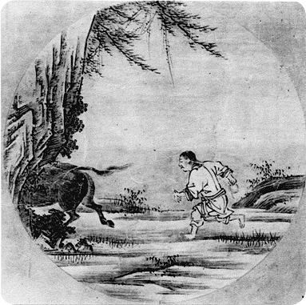

| LIVE ZEN kätkeb endas nii
virtuaalset kui füüsilist kohta aitamaks avastada teed oma lätte
juurde, oma isiksuse algse allika juurde, abiks meetodid, mis on olnud
kasutusel Osho kommuunides. Koht on avatud kõigile loomingulistele lähenemistele, mis virgutavad meie keha ja meele kohalolu ning ärksat teadvustumist. |
 |
|
HÄRGA OTSIDES
Samuti on Zen-praktikas tihti kasutatud mõtluslugusid (/mõistulugusid), mis kurnab mõistuse niivõrd ära, et tekib võimalus mõte kõrvale jätta ning avaneb julgus hüpata kohalolemisse. 1968. aastal tuli Charles Berner’ile Ameerikast hea mõte, lasta õpilastel harjutada mõtluslugusid paarides, võimaldades nii üksteisele toeks olla hinnandutest vaba kohaloluga, ja nõnda läbida harjutust ülimalt intensiivses vormis hommikust õhtuni. Grupis "kes on sees" töötavad osalejad paaris mõtluslooga. Iga päev eristub ühe looga “10 härja” sarjast koos Osho kommentaaridega. Tegevused/ Praktikad: Meditatsioonipäevad - uute ja vanade tehnikate praktiseerimine Puudutuste keel - keskendumine kohalolule oma kehas ja tundlikkuse arendamisele, väike massaaži-õpetus Meditatsiooniteraapiad nagu Müstiline Roos, Uuestisünd ja Ajuvaba võimaldavad heita endalt kogutud kattekihte. |
||
| Zen Osho Tegevused Loeng Kontakt Galerii |